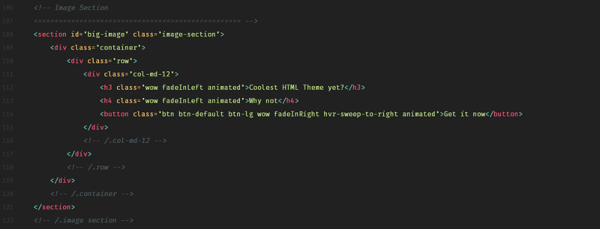
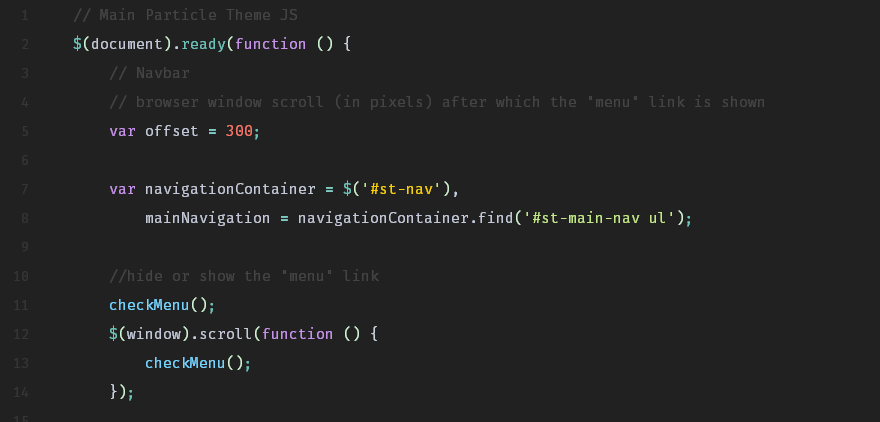
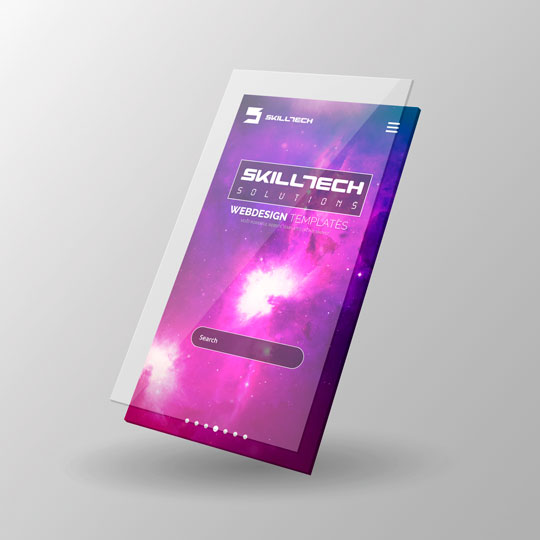
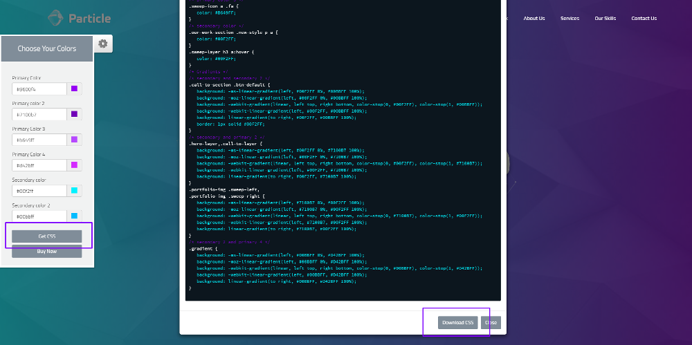
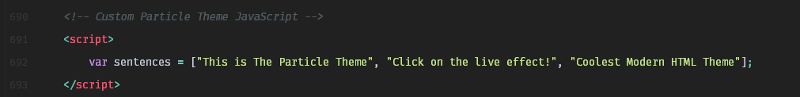

Created: 02/09/2017
Latest Update: 07/11/2017
Version: 1.0.1
By: Skilltech
Website: www.skilltechwebdesign.com
Thank you for purchasing Particle HTML Theme! If you like the template, please rate it on Envato so we can create even better themes. If you have any questions that are beyond the scope of this help file, please feel free to email us.
When you download your theme files, among others, you will see separate folders, particle_light, particle_light_video, particle_light_yt, partcile_dark, particle_dark_video and particle_dark_yt. All folders are organized in the same fashion and contain all the files you will need for the style, or main background you choose. After you choose your prefered version, you can separate that folder from others and customize it.
Except HTML, all files are located in the assets folder. As you can see below, there are css, js, images, fonts and in some versions a video folder. Both css and js folders are organized in the same way. There are two directories, custom and libraries. As the name implies, libraries contain different JavaScript/CSS libraries which are used in this theme, while custom folder contains our custom code. This is done for your convenience, but of course you can easaly organize the files as you wish to.
-- Particle Theme file structure
This theme relies on one large page, and two smaller ones. The main page is structured into sections, which are marked with large HTML comments, so you can navigate through the code easily.
The theme is built on Bootstrap framework, and it utilizies it's grid layout. If you worked with Bootstrap before, you will see the familiar boostrap specific classes, and of course a large number of custom ones.
Here is the example code from the theme:
-- HTML code structure
Besides the libraries css files, each of the versions of the Particle theme have only two custom CSS files. They are called theme.css and colors.css. The file colors.css is the same in both syles and contains main colors for the theme. As with the main HTML File, CSS is organized in sections which are also marked with large comments for easy navigation. CSS file is structured to follow the sections order of the HTML file, so for each section of the main page, you have coresponding sections in the CSS. At the end of the file, there are media queries, and for each viewport width, all the code follows the same principle, the sections that come in first in main HTML page, also come first in media queries.
We are using some of the latest features of CSS, but all of the main things you will want to customize are very straight forward, as you will see later in the documentation.
Here is an example of the CSS code:
-- Section Index of the main CSS file
-- CSS structure
The theme includes several JavaScript files. First and foremost, theme uses jQuery and Bootstrap's JavaScript, but also some different jQuery plugins, and JS libraries. The main custom files names have particle-theme in it, coresponding with each style. If you are expirienced in coding in JavaScript, that will be the file you will do all your customization. If not, you don't need to even open the file, since the main thing you will need to customize is in the JS snippet at the bottom of the HTML files, where you will only need to change the text (sentences, and not the actual JavaScript code). The main JS file is, also, divided into sections, and marked with comments.
Here is some code from the custom JS file:
-- JS Structure
As a bonus we included three PSD and AI files that are used in this theme. You can find them in the mockups folder. There are two separate folders with AI and PSD mockups.
-- PSD File
Probably the first thing you want to do is to change the main colors to suit your brand. All CSS code for the main colors is located in the colors.css file, so the customization can be done in one file.
We made this customization incredibily easy, as you probably noticed on our demo page. You can choose the desired colors with our color picker, and see it in real time. When you are satisfied with the look, click on the "GET CSS" button, then on the "DOWNLOAD CSS". The only thing you need to after that is to move the colors.css file to your desired directory and if needed, change the link in the head of the HTML files to corespond with the path of the file. Of course, since our main colors are in a separate file, you can easily change the colors manualy.
-- Choosing colors with our color picker
-- Manualy changing colors in the colors.css file
After the colors, the most important customization is to change the text generated by the typed.js plugin.
As the colors, this is also very easy to change. Go the the bottom of the HTML files, and you will see the JS snippet, like in the photo below. There you will see the variable sentences that are displayed, which you need to change to your needs. Just keep in mind, to change only the text and not the code. And that's it!
Here is the image:
-- Customizing the typed.js plugin
There are two types of videos in our template, self-hosted video and YouTube video, so there are two different ways of customizing them.
Self hosted video is noting more than the video that is located in your site's directory and not on some of the video sites like YouTube. There are several pros and cons for self hosting your video, so it is up to you to decide.
To include your video, you will need video in some of the formats supported by browsers. We included two types of video mp4 and webm, as a precaution, but all major browsers support the mp4 format, so you can be pretty sure that you can only use mp4. Also, we included the poster image, which is just a image of a one frame of the video, that is shown while the video is loading, but that is optional, as the browser will show the first frame automatically if the poster is missing.
After you got your videos, just paste them in the video folder and correct the names in the paths.
-- Video tag
With the YouTube video, the job is much easier. First step is to upload your video to YouTube. Then, you will need the video's ID, which is located in the in the link to your video on YouTube, after the "v=" characters.
-- YouTube Video ID
Copy the video's ID and paste it in the bottom of index.html file, in the variable videoId. That's it. If you want to customize YouTube video's appearance manualy, all the code that is related to the YouTube API is located it in the theme JS file.
-- Video ID variable
Once again, thank you for purchasing this theme. As we wrote in the begining, if you find something that isn't very clear to you, or you have some other questions, please contact us and we will gladly help you. Enjoy!
Copyright © 2017, SkillTech